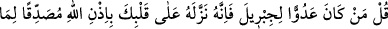
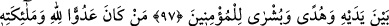
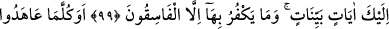
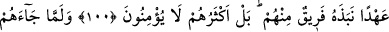
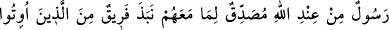
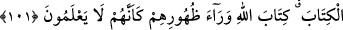

KUR’ÂN;
HİDÂYET REHBERİ
97. De ki: Cebrâîl’e kim düşman ise şunu iyi bilsin ki Allah’ın izniyle Kur’ân’ı
senin kalbine bir hidâyet rehberi, önce gelen kitapları doğrulayıcı ve mü’minler için
de müjdeci olarak o indirmiştir.
98. Kim, Allah’a meleklerine, peygamberlerine, Cebrâîl’e ve Mîkâîl’e düşman
olursa bilsin ki Allah da inkârcı kâfirlerin düşmanıdır.
99. Andolsun ki sana apaçık âyetler indirdik. (Ey Muhammed!) Onları ancak
fâsıklar inkâr eder.
100. Ne zaman onlar bir antlaşma yaptılarsa, yine kendilerinden bir gurup onu
bozmadı mı? Zâten onların çoğu îmân etmez.
101. Allah tarafından kendilerine, yanlarında bulunanı tasdik edici bir elçi gelince
ehl-i kitaptan bir gurup, sanki Allah’ın kitabını bilmiyormuş gibi onu arkalarına atıp
terkettiler.
Peygamber Efendimiz (s.a.), Medîne’ye geldiğinde Fedek sâkini yahûdîlerden
Abdullah b. Sûriyâ, O’na şöyle sordu:[337]
— “Ya Muhammed, uykun nasıldır? Çünkü biz âhır zamanda gelecek nebînin
uykusundan haberdâr edildik.”
Peygamberimiz (s.a.) buyurdu ki:
“Gözlerim uyur, kalbim uyanıktır.”
Yahûdî dedi ki: “Doğru söyledin. Pekâla söyle bakalım, çocuğun azaları babadan mı,
yoksa anadan mı olur?”
Peygamberimiz (s.a.): “Kemik ve damarlar babadan; kan, et, tırnak ve saç anadan
olur,” dedi.